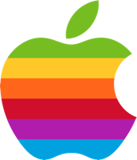

에이전트가 일하는 시대,오피스는 어떻게 바뀌어야 하는가
AI가 새로운 기술 패러다임으로 자리잡고 있음

*IBM이 1981년 최초의 개인용 컴퓨터 IBM PC(모델 5150) 출시; **WWW 대중 공개 1993년; ***아이폰 2007년 6월 출시; ****ChatGPT(GPT-3.5) 2022년 11월 출시
글로벌·테크 경험 기반, K-AI 업계 최전선에서 혁신을 추진하고 있음
Freechal
Kearney
Korea
Bain &
Company
LINE
Thailand
NAVER
kakao
Entertainment
kakao
Liner
AI Agents
서울대 경제학부
미국 미시간 대학 MBA
국민경제자문회의
AI경제 정책자문단 위원
AI 트렌드를 아는 것과 AI를 잘 쓰는 것은 별개의 문제입니다. AI를 잘 쓰는 것과 AX를 추진하는 것에는 다른 관점이 필요합니다. AX를 추진하는 것과 AX를 정착시키는 것은 또 다른 과제입니다.
1년 만에 AI는 상위 2% 수준의 지능을 갖춘 신입사원이 되었음
AI 모델별 IQ 점수(미공개 문항 테스트, 가로축 IQ)
117→135
91→127
0개→7개
사람 IQ 분포AI 모델(2025.7)AI 모델(2026.10)
출처: TrackingAI.org, AI IQ Test(오프라인 테스트, 미공개 문항) 일별 기록으로 계산. 모델별 최근 7회 평균, 2025.7.31·2026.10.18 기준 · 한국인·미국 평균: Lynn·Vanhanen, IQ and Global Inequality(2006) 추정치
AI가 이미지·영상을 넘어 화이트칼라 업무를 빠르게 대체하기 시작함
AI 결과물의 세 가지 변곡점


출처: Google, Nano Banana Pro(2025.11.20) · ByteDance Seed, Seedance 2.0(2026.2.12) · Anthropic, Claude Opus 5.5(2026.9.22) · 이미지: YouTube, The Decoder(Claude in PowerPoint)
AI를 통해 1시간 업무 소요 시간이 3년 새 45분에서 5분으로 단축됨
60분짜리 업무를 AI와 함께 끝내는 데 걸리는 시간
↑ 사람이 AI를 도구로 쓴 무작위 실험↓ AI가 일을 맡은 대화 분석 추정
에이전트 활용 급증
출처: Dell'Acqua 외, HBS(2023) · Choi 외, Minnesota Law Review(2024) · Anthropic, Estimating AI productivity gains(2025.11)·Economic Index(2026.1). 2025~26은 Claude 추정치(검증 시간 제외)
하지만 AI 도입이 가시적인 조직 성과로 이어지고 있지는 못함
- AI로 개인 생산성 향상80%
- AI가 회사 이익(EBIT)에 기여37%
- 56%아직 의미 있는 재무 효과 없음
- 12%비용 절감과 매출 증대 모두 달성
- 6%이익(EBIT)의 5% 이상을 AI로 창출(McKinsey)
- 7.5%AI 성과를 전사로 확장한 기업(BCG)
출처: McKinsey, The state of AI in 2026: On the road to ROI(2026.8.25) · PwC, 2026 Global CEO Survey(2026.1.20, 2025.9~11 조사) · BCG, Applied AI Index 2026(2026.9.30, CxO 1,330명)
AI는 도구에서 동료가 되고 있습니다.사람과 에이전트가 함께 일하는 환경을 설계해야 합니다.
휴먼-에이전트 하이브리드 업무 환경에서는 세 가지가 변모할 것임
에이전트
어디에서 일하는가?
에이전트 실행 환경
사람
에이전트와 어떻게 협업해나갈 것인가?
온오프 협업 공간
조직
하이브리드 리소스 관리의 최적 방안은?
실시간 관제 시스템
AI 빅테크는 사업 중심을 LLM 개발에서 에이전트 서비스로 옮기는 중
기업
2025
2026 Q1
2026 Q2
2026 Q3
2026 Q4
OpenAI
Anthropic
Meta
xAI
에이전트의 일터가 데스크톱에서 클라우드로 이동 중
- 실행 위치
- 가동 시간
- 통제 방식
- 개인 PC
- PC 사용 시간에 한정
- 화면 앞 직접 조작
- 클라우드 가상 컴퓨터
- 24시간 상시 가동
- 스마트폰 원격 지시·승인

휴먼-에이전트 하이브리드 업무 환경에서는 세 가지가 변모할 것임
에이전트
어디에서 일하는가?
에이전트 실행 환경
사람
에이전트와 어떻게 협업해나갈 것인가?
온오프 협업 공간
조직
하이브리드 리소스 관리의 최적 방안은?
실시간 관제 시스템
연구 결과도 세 공간의 변화를 뒷받침하고 있음
01 개인 데스크
2025.04P&G × 하버드 현장 실험
전문 인력 776명
AI를 쓴 개인 한 명이 AI 없는 2인 팀만큼 성과를 냄
02 포커스 룸
2026.07Computerworld 업무용 AI 받아쓰기 취재
Thumbtack 등 도입 기업 사례
말하기는 타이핑보다 2~4배 빠르지만, 동료 앞에서 말하는 어색함이 주요 걸림돌
03 프로젝트 룸
2025.10Microsoft Research 시뮬레이션
구매 에이전트 100개, 판매 에이전트 300개
에이전트는 첫 제안에 치우치고, 잘못된 신호에 끌려가기도 함
출처: Dell’Acqua et al., “The Cybernetic Teammate,” NBER Working Paper 33641, 2025; Computerworld, “Talk, talk, talk: The rise of AI dictation tools at work,” 2026; Microsoft Research, “Magentic Marketplace,” 2025
개인 데스크의 역할이 직접 작성에서 지시·검토로 바뀌는 중
원본 자료와 AI 결과를
나란히 비교
여러 에이전트의
진행 상황 확인
자리를 옮겨도
이어지는 작업
에이전트에게 말로 지시하는 시간이 늘며 1인 포커스 룸 수요가 커질 것임
에이전트에게
음성으로 지시·질문
긴 대화형 작업
(기획 토론, 초안 다듬기)
민감 자료를
소리 내어 검토
프로젝트 룸의 역할이 논의에서 에이전트 결과 중 선택으로 바뀔 것임
에이전트가 만든 세 가지 사업 시나리오를 띄우고,
팀이 가정과 조건을 바꾸며 결정
에이전트가 만든
여러 대안 비교
회의 중 가정을 바꿔
결과 재확인
선택한 안과
판단 근거 정리
에이전트와 일할수록 사람 사이의 연결이 더 중요해질 것임
현상 · 동료와 점점 멀어지는 일하는 방식
동료보다 AI와의 관계가 더 좋다고 답한 비율
64%AI 활용 성과 상위 직원
Upwork Research Institute, 2025전날 외로움을 많이 느꼈다고 답한 비율
→
대안 · 사람들이 여전히 모여야 하는 이유
함께 판단하기
에이전트가 가져온 선택지를 함께 따지고 결정하는 시간
서로 연결되기
신뢰, 소속감, 멘토링은 여전히 얼굴을 맞대야 자라는 영역
출처: Gallup, “State of the Global Workplace: 2024 Report”; Upwork Research Institute, “From Tools to Teammates: Navigating the New Human-AI Relationship,” 2025
휴먼-에이전트 하이브리드 업무 환경에서는 세 가지가 변모할 것임
에이전트
어디에서 일하는가?
에이전트 실행 환경
사람
에이전트와 어떻게 협업해나갈 것인가?
온오프 협업 공간
조직
하이브리드 리소스 관리의 최적 방안은?
실시간 관제 시스템
LLM 자체보다 Company Brain과 관제 체계의 중요성이 커질 것임
ENGINE
LLM
골라 쓰는 엔진
- 범용 LLM
- 도메인 특화 LLM
- 사내 모델
CONTROL TOWER
실시간 관제
- 활동 기록 수집
- 사람·에이전트 가동
- 비용·성과
- 이상 감지·중단
공간 운영·수요 예측 기준이 출입 데이터에서 업무 데이터로 바뀔 것임
BUILDING TWIN
기존건물 관제
- 대상
- 공간 · 설비 · 출입
- 관리 부서
- 시설관리(FM) 팀
- 핵심 질문
- 공간·설비 운영 효율은 최적인가
01업무 데이터 → 공간
포커스 룸 수요 예측예약률 기반→음성 작업량 기반
02업무 데이터 → 공간
프로젝트 룸 배정선착순 예약→작업 단계 기반
03업무 데이터 → 공간
오피스 면적 산정 기준인원수 기준→업무 유형 기준
WORK TWIN
신규업무 관제
- 대상
- 사람 · 에이전트 · 작업 · 비용
- 관리 부서
- 하이브리드 리소스 관리 팀
- 핵심 질문
- 인력·에이전트 생산성은 최적인가
2027년 AX는 기반·업무·사람·역량·측정 다섯 축에서 바뀔 것임
2027 AX 트렌드
오늘 다룬 변화
- Company Brain ·
Skill Library데이터 축적에서 업무 노하우 축적으로 전환
- Agent OS
에이전트가 일할 신원·실행·관제 기반 구축
- Desktop → Cloud
에이전트 실행 환경이 개인 PC에서 클라우드로 이동
- AI-enabled →
AI-nativeAI를 덧붙이는 대신 AI 전제로 업무 재설계
- Writing →
Directing직접 작성에서 에이전트 지시·검토로 전환
- [Human + Agent] Team
사람과 에이전트가 한 팀으로 협업
- Human Connection
에이전트와 일할수록 사람 사이 연결이 핵심
- Using AI →
Operating AIAI 교육 목표를 체험에서 운영으로 전환
- People Leader →
Hybrid Leader사람과 에이전트를 함께 이끄는 리더로 전환
- Token Maxxing →
Value Maxxing사용량보다 창출 가치 중심으로 평가
- Badge Data →
Work Data출입 대신 업무 데이터로 공간 수요 예측
AX가 성공하려면 노력의 70%를 사람에 집중해야 함
현장 서비스 AX 성공을 위한 노력 배분
사람과 프로세스에 집중
- 구성원을 움직이는 명확한 비전과 근거 제시
- 공동 설계와 빠른 반복으로 서비스 조직 참여 유도
- 실행력을 높이는 프로세스와 역할 재정의
- 서비스 전략·KPI와 조직문화 정렬
- 필요 역량 교육과 조직 역량 구축
AI에 집중
- 현장 서비스 머신러닝, 예측 분석, 생성형 AI 적용
데이터와 기술에 집중
- 현장 조직에 안정적인 기술 제공
- 현장·서비스 시스템 통합으로 전 과정 자동화
출처: BCG, “AI Fuels Field Service Transformation. Change Management Provides the Spark,” 2026년 1월
진짜 기회는 최고의 모델을 고르는 데 있지 않습니다.
모델 위에 인적 자본과 토큰 자본이 함께 복리로 쌓이는
학습 루프를 만드는 데 있습니다.
사티아 나델라, 마이크로소프트 CEOX 에세이, 2026년 6월 14일
SIGNAL 2026
강정구 · 라이너 AI 전략 총괄
일선 현장에서도 AI 도입 성과에 대한 질문이 커지는 중
“우리 회사도 AI를
도입해야 하지 않을까?”
많은 회사가 자체 AI 모델(커스텀 AI) 구축에 돈을 씀
→구축하는 사이 더 좋은 모델이 나와 성능 격차가 커짐
“모델이 이렇게 빠르면
무엇부터 해야 하지?”
내부망 모델과 별개로 최신(SOTA) 모델을 쓰는 교육 수요가 급증함
→회사마다 전사 AI 교육을 서둘러 시작함
“늘어나는 토큰 비용은
누가 관리하지?”
Accenture는 일부 직원의 Claude 사용액이 월 $500~1,000에 이르자, 인당 월 $29로 제한함(2026.10)
→토큰비도 인건비처럼 관리해야 한다는 인식이 생김
경영진이
갖는 의구심
- 교육은 시켰는데, 그다음은 뭘 해야 하지?
- 토큰 비용은 계속 증가하는데, 그래서 성과는?
- AI 도입 성과가 정말 나고 있는 게 맞나?
- 효과가 있다는데, 왜 비용은 줄지 않지?
출처: Forbes, "Accenture Clarifies Claude Spending Limits As AI Cost Questions Grow"(2026.10.16)